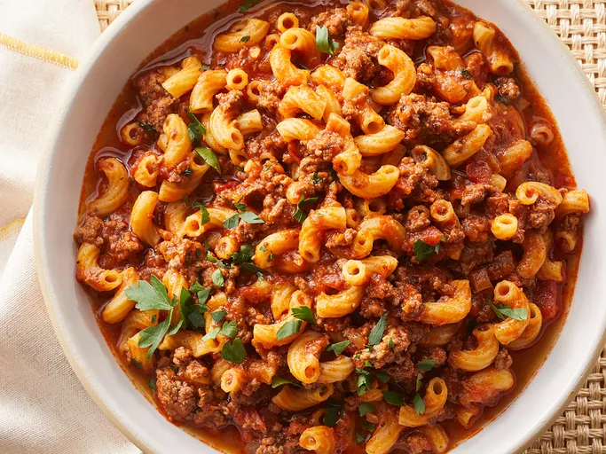

American Goulash

This Americanized version of goulash was invented to stretch a small amount of beef into enough food for a not-so-small family. It's a simple dish that doesn't taste simple, so it's perfect for your weeknight dinner rotation.
Ingredients
- 1 tablespoon olive oil
- 2 pounds ground beef
- 1 large onion, diced
- 4 cloves garlic, minced
- 2 large bay leaves
- 2 tablespoons paprika
- 2 teaspoons Italian seasoning
- 2 teaspoons kosher salt
- 1/2 teaspoon ground balck pepper
- 1 pinch cayenne pepper
- 1 quart chicken broth
- 1 (24 ounce) jar marinara sauce
- 1 (15 ounce) can diced tomatoes
- 1 cup water
- 2 tablespoons soy sauce
- 2 cups elbow macaroni
- 1/4 cup chopped Italian parsley
- 1 cup shredded white Cheddar cheese(Optional)